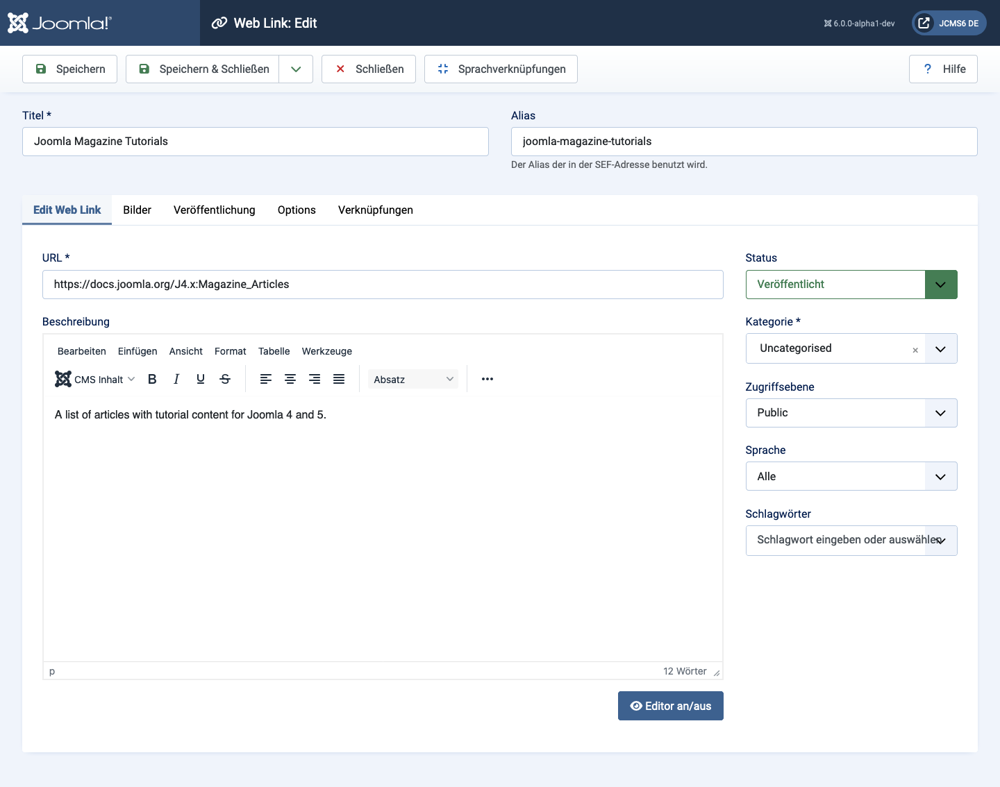
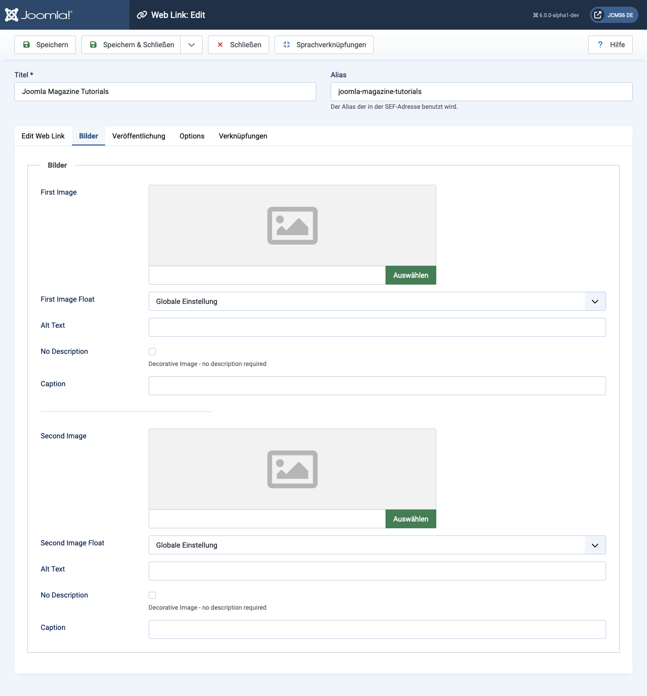
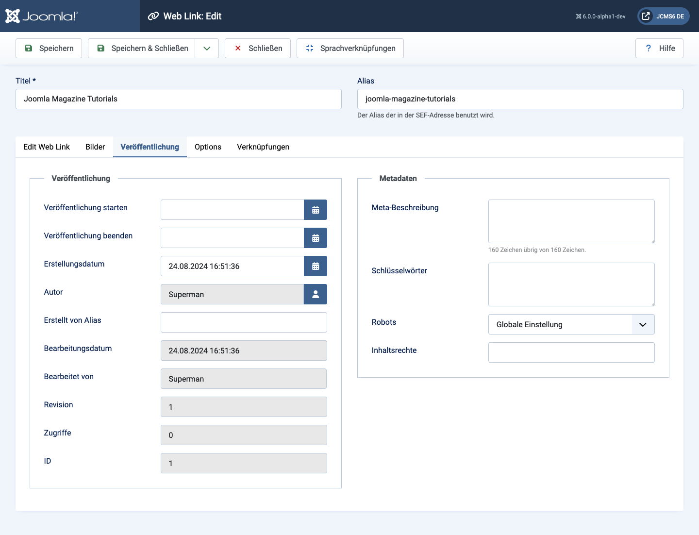
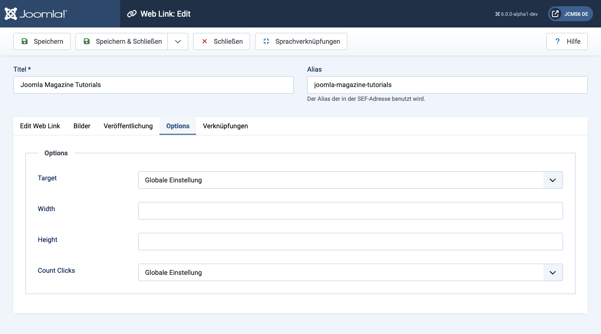

Joomla Help Screens
Weblink: Bearbeiten
Beschreibung
Dieses Formular wird verwendet, um einen neuen Weblink hinzuzufügen oder einen bestehenden Link zu bearbeiten. Beachten Sie, dass Sie mindestens eine Weblink-Kategorie erstellen müssen, bevor Sie Ihren ersten Weblink erstellen können.
Allgemeine Elemente
Einige Elemente dieser Seite werden in separaten Hilfsartikeln behandelt:
Zugriff
- Wählen Sie Komponenten → Weblinks → Links aus dem Administrator-Menü. Dann...
- Wählen Sie die Neu-Schaltfläche in der Werkzeugleiste, um einen neuen Link zu erstellen. Oder...
- Wählen Sie einen Titel aus der Liste der Links, um einen bestehenden Link zu bearbeiten.
Screenshot

Formularfelder
Linke Spalte
- URL Die URL des Weblinks.
- Beschreibung Die Beschreibung für das Element. Beschreibungen von Kategorien, Unterkategorien und Weblinks können je nach Parametereinstellungen auf Webseiten angezeigt werden. Diese Beschreibungen werden mit dem gleichen Editor eingegeben, der auch für Artikel verwendet wird.
Bilder-Tab

- Erstes Bild Klicken Sie auf Auswählen, um ein Bild auszuwählen, das mit diesem Element im Frontend angezeigt wird.
- Bildausrichtung Wo das Bild im Verhältnis zum Text auf der Seite platziert wird.
- Alternativtext Alternativtext für Besucher, die keinen Zugriff auf Bilder haben. Dieser Text wird durch den Beschriftungstext ersetzt, wenn ein solcher verfügbar ist.
- Beschriftung Die Beschriftung für das Bild.
- Zweites Bild Klicken Sie auf Auswählen, um ein weiteres Bild auszuwählen, das mit diesem Element im Frontend angezeigt wird.
- Bildausrichtung (Global verwenden/Rechts/Links/Keine). Wo das Bild im Verhältnis zum Text auf der Seite platziert wird.
- Alternativtext Alternativtext für Besucher, die keinen Zugriff auf Bilder haben. Dieser Text wird durch den Beschriftungstext ersetzt, wenn ein solcher verfügbar ist.
- Beschriftung Die Beschriftung für das Bild.
Veröffentlichungs-Tab

- Startveröffentlichung Datum und Uhrzeit, wann die Veröffentlichung starten soll. Verwenden Sie dieses Feld, wenn Sie Inhalte im Voraus erstellen und zu einem späteren Zeitpunkt automatisch veröffentlichen lassen möchten.
- Ende der Veröffentlichung Datum und Uhrzeit, wann die Veröffentlichung enden soll. Verwenden Sie dieses Feld, wenn Sie Inhalte automatisch in den Zustand "Unveröffentlicht" ändern möchten (z. B. wenn sie nicht mehr relevant sind).
- Erstellungsdatum Dieses Feld zeigt standardmäßig das Erstellungsdatum des Artikels an. Sie können ein anderes Datum und eine andere Uhrzeit eingeben oder auf das Kalender-Symbol klicken, um das gewünschte Datum auszuwählen.
- Erstellt von Name des Joomla!-Benutzers, der dieses Element erstellt hat. Standardmäßig wird der aktuell angemeldete Benutzer verwendet. Um dies zu ändern, klicken Sie auf die Schaltfläche Benutzer auswählen, um einen anderen Benutzer auszuwählen.
- Alias des Autors Dieses optionale Feld ermöglicht es, einen Alias für den Autor dieses Artikels einzugeben, damit ein anderer Autorenname angezeigt werden kann.
- Letzte Änderung (Nur informativ) Datum der letzten Änderung.
- Geändert von (Nur informativ) Benutzername der Person, die die letzte Änderung vorgenommen hat.
- Revisionen (Nur informativ) Anzahl der Revisionen dieses Elements.
- Hits Die Anzahl der Aufrufe dieses Elements.
- ID Eine eindeutige Identifikationsnummer für dieses Element, die automatisch von Joomla! zugewiesen wird. Sie dient zur internen Identifikation und kann nicht geändert werden. Beim Erstellen eines neuen Elements zeigt dieses Feld 0 an, bis der Eintrag gespeichert wird, woraufhin eine neue ID zugewiesen wird.
- Meta-Beschreibung Ein optionaler Absatz, der als Beschreibung der Seite im HTML-Output verwendet wird. Dies wird in der Regel in den Suchergebnissen von Suchmaschinen angezeigt. Wenn ausgefüllt, wird ein HTML-Meta-Element mit dem Attribut "description" und einem Inhalt gleich dem eingegebenen Text erstellt.
- Meta-Schlüsselwörter Optionale Eingabe von Schlüsselwörtern. Diese müssen durch Kommas getrennt eingegeben werden (z. B. "katzen, hunde, haustiere") und können in Groß- oder Kleinbuchstaben eingegeben werden.
- Externe Referenz Eine optionale Referenz, die zur Verlinkung auf externe Datenquellen verwendet wird. Wenn ausgefüllt, wird ein HTML-Meta-Element mit dem Attribut "xreference" und einem Inhalt gleich dem eingegebenen Text erstellt.
- Robots Die Anweisungen für Web-"Robots", die diese Seite durchsuchen.
- Global verwenden: Den in den Optionen der Komponente gesetzten Wert verwenden.
- Index, Follow: Diese Seite indizieren und die Links auf der Seite folgen.
- No index, Follow: Diese Seite nicht indizieren, aber den Links auf der Seite folgen.
- Index, No follow: Diese Seite indizieren, aber den Links auf der Seite nicht folgen.
- No index, no follow: Diese Seite nicht indizieren und den Links auf der Seite nicht folgen.
- Inhaltsrechte Beschreiben Sie, welche Rechte andere zur Nutzung dieses Inhalts haben.
Optionen-Tab

- Ziel Wie der Link geöffnet wird. Optionen sind:
- Im Elternfenster öffnen. Öffnet den Link im aktuellen Browserfenster, ermöglicht die Navigation vor und zurück.
- In neuem Fenster öffnen. Öffnet den Link in einem neuen Browserfenster.
- Im Popup öffnen. Öffnet den Link in einem Popup-Fenster.
- Modal. Öffnet den Link in einem Modal-Fenster.
- Breite Breite des IFrame-Fensters. Geben Sie eine Pixelzahl oder einen Prozentsatz ein. Zum Beispiel bedeutet "550" 550 Pixel. "75%" bedeutet 75% der Seitenbreite.
- Höhe Höhe des IFrame-Fensters. Geben Sie eine Pixelzahl oder einen Prozentsatz ein.
- Klicks zählen Ob gezählt wird, wie oft dieser Weblink geöffnet wurde.